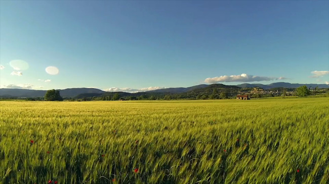
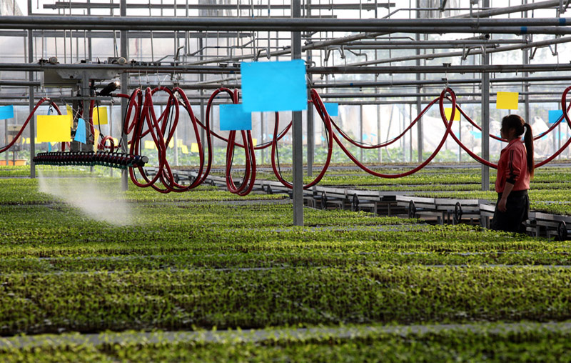
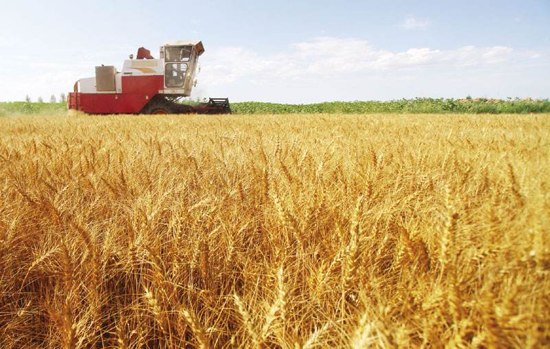
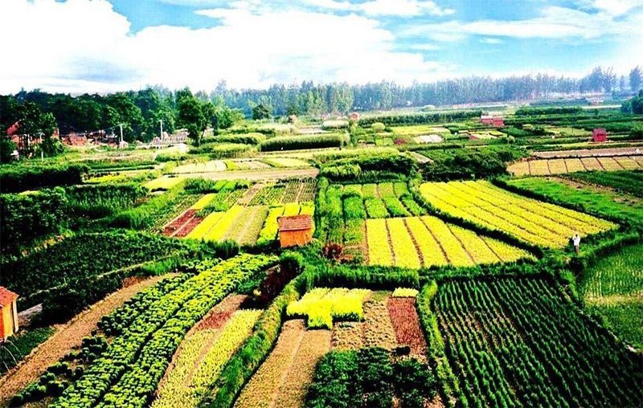

Welcome to MyGarden
“MyGarden”都市菜园是结合智慧农业打造的一款为城市家庭居民租地种菜的交易平台。智慧农业就是将物联网技术运用到传统农业中去，运用传感器和软件通过移动平台或者电脑平台对农业生产进行控制，使传统农业更具有“智慧”...
了解更多
MyGarden都市菜园

“MyGarden”都市菜园是结合智慧农业打造的一款为城市家庭居民租地种菜的交易平台。智慧农业就是将物联网技术运用到传统农业中去，运用传感器和软件通过移动平台或者电脑平台对农业生产进行控制，使传统农业更具有“智慧”。除了精准感知、控制与决策管理外，从广泛意义上讲，智慧农业还包括农业电子商务、食品溯源等方面的内容。结合物联网的概念和相关软件开发技术，设计了一套利用传感器和摄像头传输农田数据、基于Web服务器的租地种菜平台，既方便了农场主对农田资源的管理，又能够让城市家庭居民吃到健康绿色的自种蔬菜。

智慧农业 全程追溯 全心为您
私家菜园全方位定制，采用摄像头+传感器，7*24小时全程直播，食品安全掌握在自己手中
最近相关
网络菜市场:实现5.0农业全产业链
发布时间：2017-04-19
从刀耕火种到铁犁牛耕，从面朝黄土背朝天的手工劳作到机械化的精耕细作。到如今，人工智能、大数据、信息化等技术相继运用到农业当中...
来源：中国智慧农业官网
城市化为农业转型开辟新途径
发布时间：2017-04-12
城市化这以不可逆转的趋势正在重塑农村和城市地区的粮食安全、营养、贫困以及发展方向。一方面，城市化和人口增长将为全球粮食系统和农业生产带来巨大的压力
来源：中国科学报
今年各省重点扶持的农村致富项目
发布时间：2017-03-17
很多人了解我国整体的农业政策方向，哪些项目受国家鼓励也大致心中有数。但我国毕竟幅员辽阔，南北和东西差异都很大，各地支持和鼓励的产业因为地域条件...
来源：中央人民广播电台